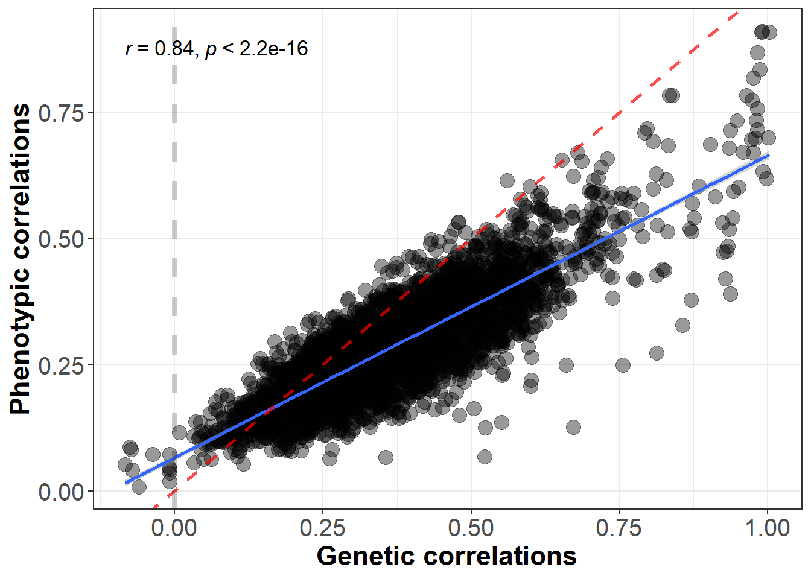
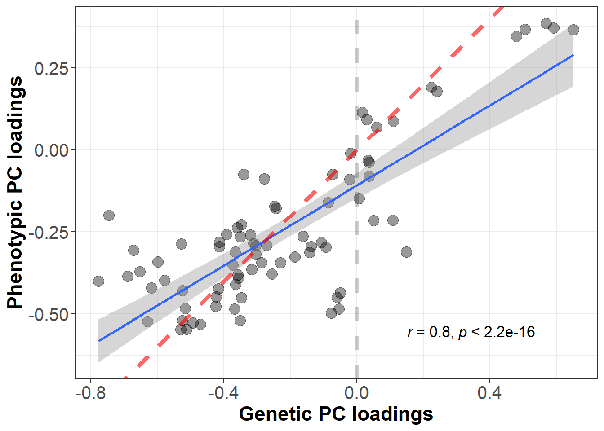
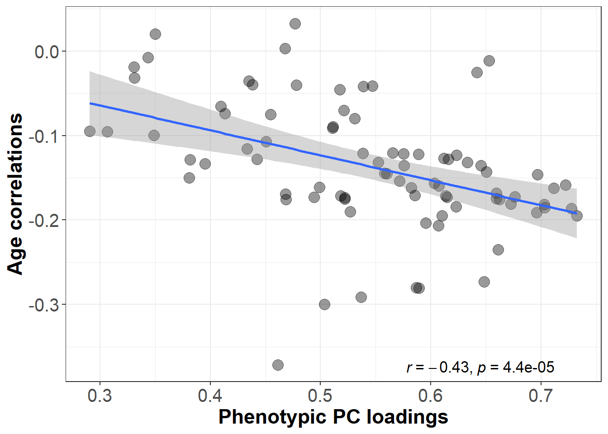
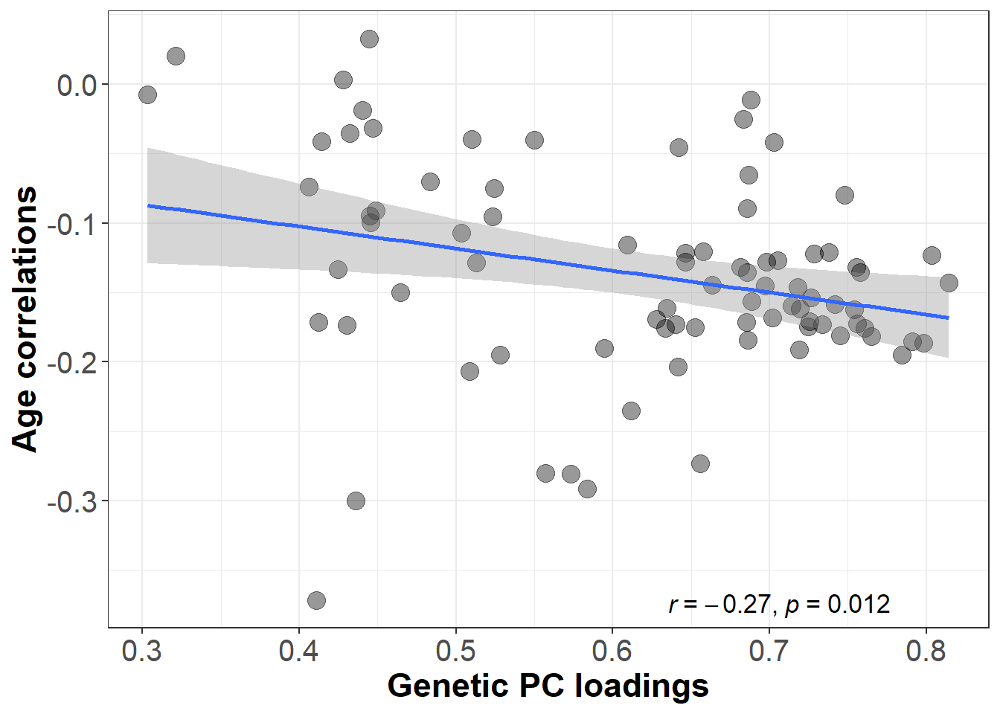

Hypothesis 2 & 1
\[\\[0.5in]\]
Here we compare genetic and phenotypic brain networks and investigate whether they have the same properties in terms of their association with age-volume correlations.
Hypothesis 2
We hypothesise a positive association and high congruence between the two sets of factor loadings which would implicate that the same dimensions that underlie phenotypic variation in regional volumes also control the dimension of genetic sharing across these brain volumes. That is, it would suggest that phenotypic structural integrity recapitulates genetic integrity and that they are underpinned by similar general biological mechanisms.
Association between phenotypic and genetic correlations
Previously, we have calculated a phenotypic and genetic correlation matrix between 83 brain areas. Here we test whether phenotypic correlations were equivalent to genetic correlations.
##### correlate genetic and phenotypic correlations between brain regions
##### load genetic data
#set wd
workingd<-getwd()
temporarywd<-paste0(workingd,"/data_my_own/ldsc/")
setwd(temporarywd)
load("whole_brain.RData")
ldscoutput<-LDSCoutput_wholebrain
# name rows and columns
dimnames(ldscoutput$S_Stand)[[1]]<-dimnames(ldscoutput$S)[[2]]
dimnames(ldscoutput$S_Stand)[[2]]<-dimnames(ldscoutput$S)[[2]]
# keep lower matrix
cormatrix<-ldscoutput$S_Stand
get_lower_tri<-function(cormatrix){
cormatrix[upper.tri(cormatrix)] <- NA
return(cormatrix)
}
genetic_cor<-get_lower_tri(cormatrix)
genetic_cor<-reshape2::melt(genetic_cor)
names(genetic_cor)<-c("region1","region2","genetic_cor")
######## load phenotypic data
temporarywd_pheno<-paste0(workingd,"/data_my_own/Pheno_preparation/")
setwd(temporarywd_pheno)
load("pheno_decomposition.RData")
phenotypic_cor<-cor_matrix
# sort same as genetic matrix
names<-dimnames(ldscoutput$S)[[2]]
phenotypic_cor<-phenotypic_cor[names,names]
# get lower triangle
phenotypic_cor<-get_lower_tri(phenotypic_cor)
phenotypic_cor<-reshape2::melt(phenotypic_cor)
names(phenotypic_cor)<-c("region1","region2","phenotypic_cor")
gen_pheno<-merge(genetic_cor,phenotypic_cor,by=c("region1","region2"))
# remove correlations with itself (genetic and phenotypic)
gen_pheno$genetic_cor<-ifelse(gen_pheno$region1 == gen_pheno$region2,NA,gen_pheno$genetic_cor)
gen_pheno$phenotypic_cor<-ifelse(gen_pheno$region1 == gen_pheno$region2,NA,gen_pheno$phenotypic_cor)
# calculate correlation between phenotypic and genetic correlations
#cor.test(gen_pheno$genetic_cor,gen_pheno$phenotypic_cor)
cor_cor<-round(cor(gen_pheno$genetic_cor,gen_pheno$phenotypic_cor,use="pairwise.complete.obs"),digits=2)
#plot(gen_pheno$genetic_cor,gen_pheno$phenotypic_cor,ylab="Phenotypic correlations",xlab="Genetic correlations",xlim=c(-0.3,1),ylim=c(-0.3,1))
#abline(lm(gen_pheno$phenotypic_cor~gen_pheno$genetic_cor,na.action = "na.omit"),col="blue")
#abline(0,1,col="red")
#abline(x=0,col="green")
library(ggplot2)
library(ggpubr)
plot_corr<-ggplot(gen_pheno, aes(x=genetic_cor,y=phenotypic_cor))+#
geom_point(size=4,alpha=0.4)+
geom_smooth(method=lm, se=TRUE) #+
#ggtitle("Phenotypic vs. genetic correlations")
plot_corr<- plot_corr+xlab("Genetic correlations")+ ylab("Phenotypic correlations")+
theme(plot.title = element_text(size=20, hjust = 0.5), panel.background = element_blank(), axis.line = element_line(color="black"), axis.line.x = element_line(color="black"))+ theme_bw()+
stat_cor(method="pearson",cor.coef.name="r",size=4.5,position = "identity",)+
theme(legend.position = "none")+
geom_abline(intercept=0,slope=(1),linetype="dashed",color="red",show.legend=T, size=1,alpha=0.7)+
geom_vline(xintercept = 0,linetype="dashed",color="black",size=1.5,alpha=0.2)+
theme(text = element_text(size=12,family="Arial Narrow"),
axis.text.x = element_text(size=15,family="Arial Narrow"),#angle=45
axis.text.y = element_text(size=15,family="Arial Narrow"),
axis.title.y = element_text(face="bold", colour='black', size=17,family="Arial Narrow"),
axis.title.x = element_text(face="bold", colour='black', size=17,family="Arial Narrow"))
plot_corr
summary(lm(gen_pheno$phenotypic_cor~gen_pheno$genetic_cor,na.action = "na.omit"))##
## Call:
## lm(formula = gen_pheno$phenotypic_cor ~ gen_pheno$genetic_cor,
## na.action = "na.omit")
##
## Residuals:
## Min 1Q Median 3Q Max
## -0.34100 -0.04031 0.00022 0.04062 0.25199
##
## Coefficients:
## Estimate Std. Error t value Pr(>|t|)
## (Intercept) 0.065770 0.002713 24.25 <2e-16 ***
## gen_pheno$genetic_cor 0.598096 0.006674 89.61 <2e-16 ***
## ---
## Signif. codes: 0 '***' 0.001 '**' 0.01 '*' 0.05 '.' 0.1 ' ' 1
##
## Residual standard error: 0.06172 on 3401 degrees of freedom
## (3486 observations deleted due to missingness)
## Multiple R-squared: 0.7025, Adjusted R-squared: 0.7024
## F-statistic: 8031 on 1 and 3401 DF, p-value: < 2.2e-16The red line is the line of identity.
We correlated phenotypic with genetic correlations among these areas, and we obtained a significant correlation of 0.84. This indicates that phenotypic correlations predict genetic correlations fairly well.
temporarywd<-paste0(workingd,"/data_my_own/ldsc/")
setwd(temporarywd)
load("whole_brain.RData")
ldscoutput<-LDSCoutput_wholebrain
dimnames(ldscoutput$S_Stand)[[1]]<-dimnames(ldscoutput$S)[[2]]
dimnames(ldscoutput$S_Stand)[[2]]<-dimnames(ldscoutput$S)[[2]]
k<-nrow(ldscoutput$S)
SE<-matrix(0, k, k)
SE[lower.tri(SE,diag=TRUE)] <-sqrt(diag(ldscoutput$V))
get_lower_tri<-function(cormatrix){
cormatrix[upper.tri(cormatrix)] <- NA
return(cormatrix)
}
SE_lower<-get_lower_tri(SE)
SE_lower<-reshape2::melt(SE_lower)Association between phenotypic and genetic loadings on the first PC
# load phenotypic loadings
temporarywd_pheno<-paste0(workingd,"/data_my_own/Pheno_preparation/")
setwd(temporarywd_pheno)
load("pheno_decomposition.RData")
pheno_stand_loadings<-stand_loadings
names(pheno_stand_loadings)[2]<-"pheno_stand_loadings"
pheno_stand_loadings$pheno_stand_loadings<-pheno_stand_loadings$pheno_stand_loadings*(-1)
# load genetic loadings
library(data.table)
temporarywd<-paste0(workingd,"/data_my_own/standardised_loadings/")
setwd(temporarywd)
gen_stand_loadings<-read.table("stand_loadings_whole_brain.txt",header=T)
names(gen_stand_loadings)[2]<-"gen_stand_loadings"
# multiply the loadings with -1 if the median of the loadings is negative
median_loadings<-median(gen_stand_loadings$gen_stand_loadings)
mean_direction<-sign(median_loadings)
if(mean_direction == -1){
gen_stand_loadings$gen_stand_loadings<-gen_stand_loadings$gen_stand_loadings*(-1)
} else {
gen_stand_loadings$gen_stand_loadings<-gen_stand_loadings$gen_stand_loadings}
stand_loadings<-merge(pheno_stand_loadings,gen_stand_loadings,by="Regions")
#calculate correlation between loadings
summary(lm(stand_loadings$pheno_stand_loadings~stand_loadings$gen_stand_loadings,na.action = "na.omit"))##
## Call:
## lm(formula = stand_loadings$pheno_stand_loadings ~ stand_loadings$gen_stand_loadings,
## na.action = "na.omit")
##
## Residuals:
## Min 1Q Median 3Q Max
## -0.181192 -0.043779 0.000451 0.056009 0.132253
##
## Coefficients:
## Estimate Std. Error t value Pr(>|t|)
## (Intercept) 0.14693 0.03830 3.836 0.000246 ***
## stand_loadings$gen_stand_loadings 0.64624 0.06081 10.626 < 2e-16 ***
## ---
## Signif. codes: 0 '***' 0.001 '**' 0.01 '*' 0.05 '.' 0.1 ' ' 1
##
## Residual standard error: 0.07121 on 81 degrees of freedom
## Multiple R-squared: 0.5823, Adjusted R-squared: 0.5771
## F-statistic: 112.9 on 1 and 81 DF, p-value: < 2.2e-16# save statistics in objects for text
model<-lm(stand_loadings$pheno_stand_loadings~stand_loadings$gen_stand_loadings,na.action = "na.omit")
beta<-round(summary(model)$coefficient[2,1],digits = 2)
SE<-round(summary(model)$coefficient[2,2],digits = 2)
pval<-signif(summary(model)$coefficient[2,4],digits =3)
## calculate absolute mean difference between phenotypic and genetic PC loadings
#delta_cor<-abs(stand_loadings$pheno_stand_loadings-stand_loadings$gen_stand_loadings)
#mean(delta_cor,na.rm=T)
#sd(delta_cor,na.rm=T)Genetic loadings significantly predict phenotypic loadings (b = 0.65, SE = 0.06, pvalue = 5.07^{-17}).
library(ggplot2)
library(ggpubr)
# read in area names of central executive areas
central_areas<-fread(paste0(workingd,"/Scripts/my_own_gwas/2Perform_ldsc/central_executive_areas.txt"),header=F,data.table=F)
central_areas<-as.vector(central_areas[,1])
# create vector encoding which areas are part of central executive network
stand_loadings$central_exec<-FALSE
for(i in central_areas){
stand_loadings$central_exec[which(stand_loadings$Regions==i)]<-TRUE
}
# chose which colors to assign to central executive areas
stand_loadings$central_col<-ifelse(stand_loadings$central_exec==1,"red","darkblue")
plot_loadings<-ggplot(stand_loadings, aes(x=gen_stand_loadings,y=pheno_stand_loadings))+#
geom_point(size=4,alpha=0.4,color=stand_loadings$central_col)+
geom_smooth(method=lm, se=TRUE) #+
#ggtitle("Phenotypic vs. genetic PC loadings")
plot_loadings<-plot_loadings+
xlab("Genetic PC loadings")+
ylab("Phenotypic PC loadings")+
theme(
plot.title = element_text(size=20, hjust = 0.5),
panel.background = element_blank(),
axis.line = element_line(color="black"),
axis.line.x = element_line(color="black"))+
theme_bw()+
stat_cor(method="pearson",cor.coef.name="r",size=4.5,label.x.npc=0.65,label.y.npc = 0)+
theme(legend.position = "none")+
geom_abline(intercept=0,
slope=(1),
linetype="dashed",
color="red",
show.legend=T,
size=1.5,
alpha=0.6)+
theme(text = element_text(size=12),
axis.text.x = element_text(size=15),
axis.text.y = element_text(size=15),
axis.title.y = element_text(face="bold", colour='black', size=17),
axis.title.x = element_text(face="bold", colour='black', size=17))
plot_loadings
The red line is the line of identity. PC loadings marked in red belong to regions that are part of the central executive network.
Tucker congruence coefficient
Tucker coefficient: Whole brain
# to calculate factor congruence, insert covariance matrix
# cor_matrix saved in pheno_decomposition.RData is phenotypic cov matrix
# https://openpsych.net/forum/attachment.php?aid=364
# cut off for Tucker index to assume similarity range from .85-.94
library(psych)
pheno_eigenvector<-principal(cor_matrix)
match_names<-dimnames(cor_matrix)[[1]]
# genetic matrix inferred through LDSC
temporarywd<-paste0(workingd,"/data_my_own/ldsc/")
setwd(temporarywd)
load("whole_brain.RData")
genetic_whole_brain_matrix<-LDSCoutput_wholebrain$S_Stand
colnames(genetic_whole_brain_matrix)<-dimnames(LDSCoutput_wholebrain$S)[[2]]
rownames(genetic_whole_brain_matrix)<-dimnames(LDSCoutput_wholebrain$S)[[2]]
genetic_whole_brain_matrix<-genetic_whole_brain_matrix[match_names,match_names]
gen_eigenvector<-principal(genetic_whole_brain_matrix)
tucker_index<-factor.congruence(x=pheno_eigenvector,y=gen_eigenvector)
# smoothing required because the last PC has negative eigenvaluesThe Tucker congruence coefficient for the loadings of the first PC in phenotypic vs. genetic correlation matrices is 0.99. It has been previously suggested that an index between .85-.94 indicates a “fair similarity” between the loadings (Lorenzo-Seva & ten Berge, 2006, Methodology, doi: 10.1027/1614-1881.2.2.57).
Tucker coefficient: A priori networks
# read in genetic corr matrix
temporarywd<-paste0(workingd,"/data_my_own/ldsc/")
setwd(temporarywd)
load("whole_brain.RData")
genetic_whole_brain_matrix<-LDSCoutput_wholebrain$S_Stand
colnames(genetic_whole_brain_matrix)<-dimnames(LDSCoutput_wholebrain$S)[[2]]
rownames(genetic_whole_brain_matrix)<-dimnames(LDSCoutput_wholebrain$S)[[2]]
# set wd to where region names per network are saved
temporarywd<-paste0(workingd,"/Scripts/my_own_gwas/2Perform_ldsc/")
setwd(temporarywd)
# load files containing region names
central_exec_regions<-read.table("central_executive_areas.txt")$V1
cingulo_regions<-read.table("cingulo_opercular_areas.txt")$V1
default_regions<-read.table("default_mode_areas.txt")$V1
hippocampal_regions<-read.table("hippocampal_diencephalic_areas.txt")$V1
multiple_demand_regions<-read.table("multiple_demand_areas.txt")$V1
p_fit_regions<-read.table("p_fit_areas.txt")$V1
salience_regions<-read.table("salience_areas.txt")$V1
sensori_regions<-read.table("sensorimotor_areas.txt")$V1
temporo_regions<-read.table("temporo_amygdala_orbitofrontal_areas.txt")$V1
library(psych)
library(stringr)
network_regions<-ls(pattern="_regions")
# create df to display Tucker-Lewis index per network
display_Tucker<-data.frame(matrix(ncol=2))
colnames(display_Tucker)<-c("network","Tucker_index")
for(i in network_regions){
regions<-get(i)
#print(i)
# decomposition pheno
pheno<-principal(cor_matrix[regions,regions])
# decomposition geno
geno<-principal(genetic_whole_brain_matrix[regions,regions])
# calculate Tucker-Lewis index
tucker_lewis_index<-factor.congruence(x=pheno,y=geno)
# save index
network_name<-str_remove(i,pattern="_regions")
#assign(network_name,tucker_lewis_index)
# save index in table
display_Tucker[which(network_regions ==i),"network"]<-network_name
display_Tucker[which(network_regions ==i),"Tucker_index"]<-tucker_lewis_index
}
kable(display_Tucker, label="Tucker-Lewis Index indicating factor congruence between phenotypic and genetic networks", col.names = c("Networks","Tucker congruence coefficient"))| Networks | Tucker congruence coefficient |
|---|---|
| central_exec | 1.00 |
| cingulo | 0.99 |
| default | 0.99 |
| hippocampal | 0.99 |
| multiple_demand | 1.00 |
| p_fit | 0.99 |
| salience | 0.99 |
| sensori | 0.99 |
| temporo | 0.99 |
Hypothesis 1
We hypothesise a negative correlation between genetic brain-wide PC loadings and phenotypically derived age sensitivities. We do not make a prediction about the size of the correlation as no previous study known to us has investigated this question on a genetic level. A significant association would indicate that the same general dimensions of variation in global brain aging underlie the dimension of genetic sharing across brain regions.
Association between phenotypic PC loadings and age-volume correlations
# load phenotypic loadings
names(age_cor)[2]<-"Regions"
phenotest<-merge(stand_loadings,age_cor,by="Regions")
plot_age_pheno<-ggplot(phenotest, aes(x=pheno_stand_loadings,y=age_cor))+#
geom_point(size=4,alpha=0.4,color=phenotest$central_col)+
geom_smooth(method=lm, se=TRUE)#,color="blue") #+
#ggtitle("Phenotypic age correlations vs. phenotypic PC loadings")
plot_age_pheno<-
plot_age_pheno+
xlab("Phenotypic PC loadings")+
ylab("Age correlations")+
theme(plot.title = element_text(size=20, hjust = 0.5),
panel.background = element_blank(),
axis.line = element_line(color="black"),
axis.line.x = element_line(color="black"))+
theme_bw()+
stat_cor(method="pearson",
cor.coef.name="r",
size=4.5,
color="black",
label.x.npc=0.65,
label.y.npc = 0)+
theme(legend.position = "none")+
theme(text = element_text(size=12),
axis.text.x = element_text(size=15),#angle=45
axis.text.y = element_text(size=15),
axis.title.y = element_text(face="bold", colour='black', size=17),
axis.title.x = element_text(face="bold", colour='black', size=17))
plot_age_pheno
PC loadings marked in red belong to regions that are part of the central executive network.
Association between genetic PC loadings and age-volume correlations
# merge age correlations with standardised loadings
names(age_cor)[2]<-"Regions"
data<-merge(stand_loadings,age_cor,by="Regions")
# correlate genetic stand loadings with age cor
age_correlation_result<-cor.test(data$gen_stand_loadings,data$age_cor)
age_cor_estimate<-round(age_correlation_result$estimate,digits = 2)
age_cor_pval<-round(age_correlation_result$p.value,digits = 3)Genetic loadings are significantly correlated with age sensitivity (r = -0.27, p-value = 0.012).

PC loadings marked in red belong to regions that are part of the central executive network.
Plot all four correlation plots
library(cowplot)
tiff("corr.tiff", width = 15, height = 10, units = 'in', res=1000)
plot_grid(plot_corr,plot_loadings,plot_age_pheno,plot_age_geno,nrow = 2,ncol = 2,labels=c("A","B","C","D"),width=1,height=1, label_size = 18,hjust = 0.07,scale = 0.85)
dev.off()
By Anna Elisabeth Fürtjes
anna.furtjes@kcl.ac.uk